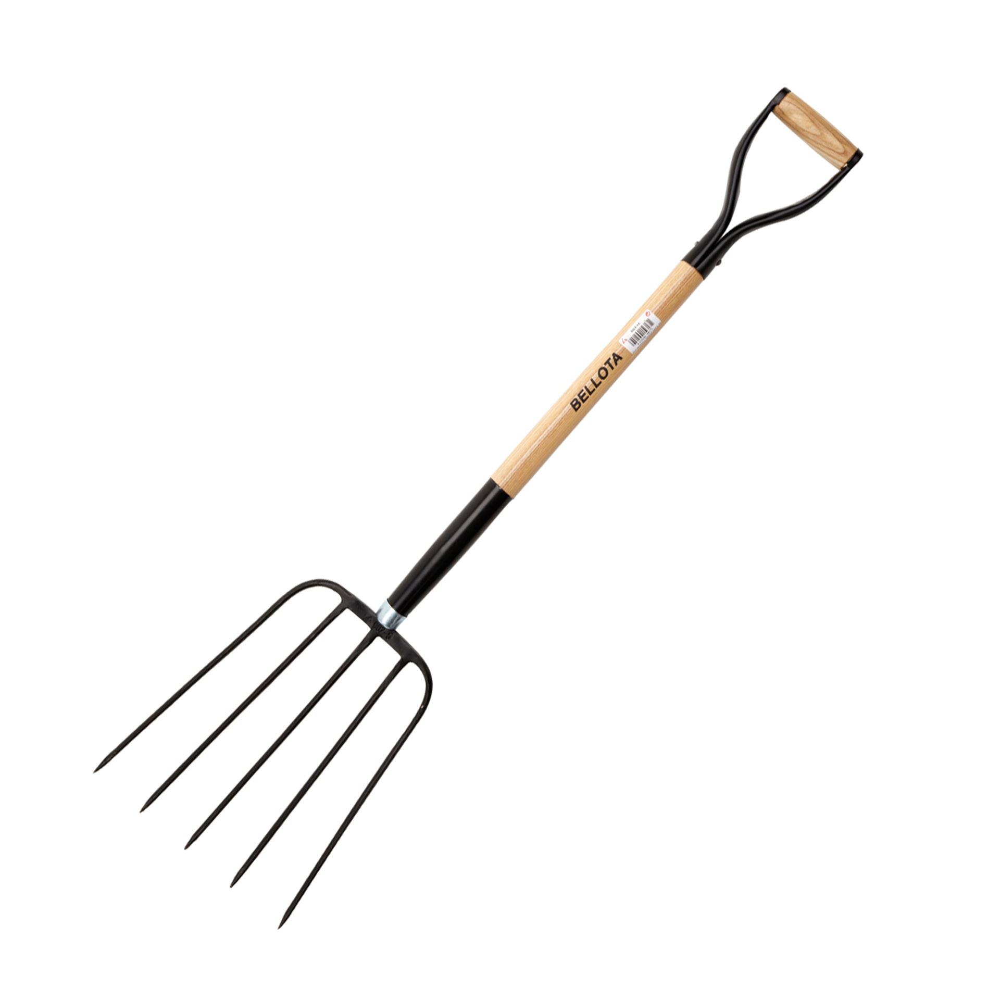
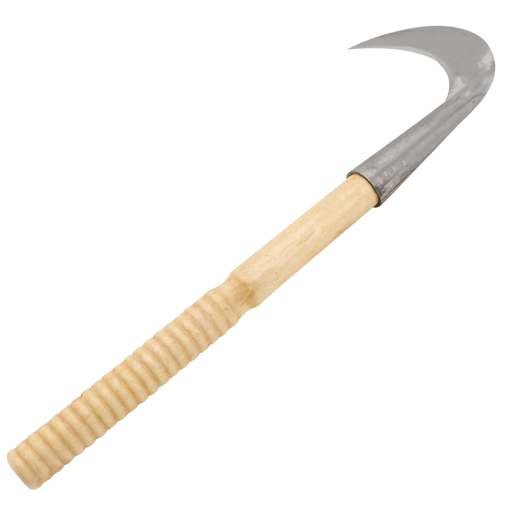

Introducción
En esta página encontraremos las palabras más comunes para la letra H.
| Herbicida | Higrometro |
|---|---|
 |
|
| Es una sustancia química diseñada para eliminar o controlar las malas hierbas en un jardín o área de cultivo. | Es un instrumento utilizado para medir la humedad relativa del aire. |
| Hidroponía | Horca |
|  | |
| Es una forma eficiente de cultivar plantas en espacios reducidos o en condiciones controladas. | Es una herramienta de jardín con un mango largo y puntas afiladas en un extremo. Se utiliza para mover y levantar materiales como heno, compost o paja, así como para airear el suelo. |
| Hoz | |
|  | |
| es una herramienta de corte curvada, con una cuchilla afilada en su extremo. Se utiliza para segar hierba, heno o cereales, cortando los tallos en un movimiento de barrido. | |